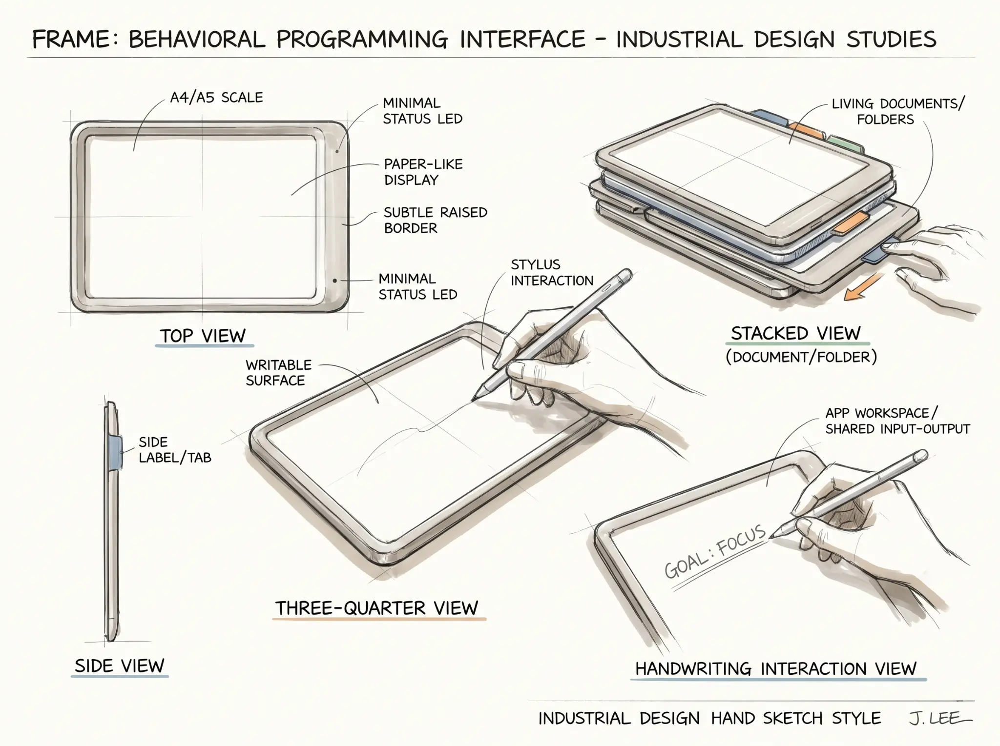
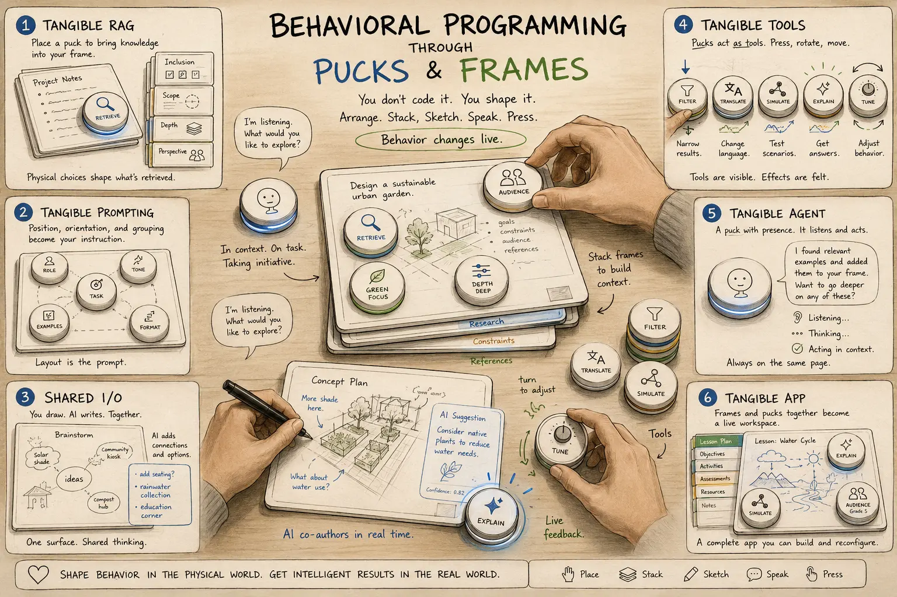

01 / Image
Plateau
Nano Banana Pro
Nano Banana Pro appears to have reached a plateau. The next meaningful movement is the upgrade from Nano Banana to Nano Banana 2.
A compact scan of image, video, voice and language-model developments— with practical signals, demos and predictions.
Nano Banana Pro appears to have reached a plateau. The next meaningful movement is the upgrade from Nano Banana to Nano Banana 2.
The model is already available across the existing tool set:
The Computational Design Lab includes a demo of the sketch-to-edit mode.
Confirmed creative use cases:


Realtime transformation is moving from research spectacle into programmable creative infrastructure.
Announced today by Black Forest Labs, FLUX 3 tops the chart with a unified multimodal model for image, video, audio and action. FLUX 3 Video is available in early access.
Also announced: FLUX-mimic, a FLUX 3 video-action model built with mimic robotics and demonstrated on real production tasks.
High-capability language models are reaching low-cost, low-latency operation. Google Gemma 4 31B in Iter provides one demonstration.
Prediction: within six months, a GPT-5.6 “Terra-level” model will feel nearly instant.
Self-hosting is not currently compelling for this use case: approximately 30 tokens/second on a high-end device versus roughly 300 tokens/second from a cloud provider.